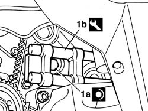

1092E26 counter rotating shaft pulley - r + r
- Path
- Procedures > 10 ENGINE > 1092 VARIOUS ENGINE COMPONENT CONTROLS > 1092E counter-rotating shaft drive > 1092E26 counter rotating shaft pulley - r + r
- Kind
- repair procedure (removal / refitting; the operation number is the code)
- Applies to
- all engines; all production periods
- Interactive page
- https://sloeber94.github.io/elrnDB-a156/en/#/3237721
Applies to: all engines; all production periods
 Removing
Removing
 Refitting
RefittingPlace the car on the lifting bridge.
7055B54 under-engine guard - r r
- 4450B80 cap of one wheel - r+r
4450B10 Front WHEEL (one) - R.R.
7055B64 Engine compartment DUST shield in front wheel arch (one), left or right - R.R.
1092G10 single engine belt r r
1092G20 engine component single belt fixed tensioner - one - r + r
1092A10 Crankshaft services PULLEY - R.R.
1032D12 timing system protective cover(s) - r + r
1092E10 counter-rotating shaft drive toothed belt - r + r
1. Unscrew screw (1a) of counter-rotating shaft pulley by using tool (1b) as countertorque.
 | Name | Country |
|---|---|---|
1b | Counter-torque | 1.820.286.000 |
Remove counter-rotating shaft pulley.

Applies to: all engines; all production periods
Refitting
RemovingFit counter-rotating shaft pulley and fix it with its screw by using tool as countertorque.
| Name | Country |
|---|---|---|
- | Counter-torque | 1.820.286.000 |
1092E10 counter-rotating shaft drive toothed belt - r + r
1032D12 timing system protective cover(s) - r + r
1092A10 Crankshaft services PULLEY - R.R.
1092G20 engine component single belt fixed tensioner - one - r + r
1092G10 single engine belt r r
7055B64 Engine compartment DUST shield in front wheel arch (one), left or right - R.R.
4450B10 Front WHEEL (one) - R.R.
- 4450B80 cap of one wheel - r+r
Applies to: engines: 2.0 JTS, 2.0 JTS; all production periods
Removing
RefittingPosition the vehicle on the ramp.
Ensure that the ignition key is in OFF position, then disconnect the negative battery terminal.
 | Name | Connector |
|---|---|---|
- | Battery |
Proceed with removal 4450B04 right front wheel r r .
Proceed with removal 7055B54 under-engine guard - r r .
Proceed with removal 1016A40 ignition coil cover on cylinder head- r+r .
Proceed with removal 1092E10 counter-rotating shaft drive toothed belt - r + r .
Proceed with removal 1092E24 counter-rotating shaft pulley - r + r with toothed belt removed .
Applies to: engines: 2.0 JTS, 2.0 JTS; all production periods
Refitting
RemovingProceed with refitting 1092E24 counter-rotating shaft pulley - r + r with toothed belt removed .
Proceed with refitting 1092E10 counter-rotating shaft drive toothed belt - r + r .
Proceed with refitting 1016A40 ignition coil cover on cylinder head- r+r .
Proceed with refitting 7055B54 under-engine guard - r r .
Proceed with refitting 4450B04 right front wheel r r .
Connect the negative (-) battery terminal.
Remove the car from the ramps.
Topics linked from this page (12)
- 1016A40 ignition coil cover on cylinder head- r+r
- 1032D12 timing system protective cover(s) - r + r
- 1092A10 Crankshaft services PULLEY - R.R.
- 1092E10 counter-rotating shaft drive toothed belt - r + r
- 1092E24 counter-rotating shaft pulley - r + r with toothed belt removed
- 1092G10 single engine belt r r
- 1092G20 engine component single belt fixed tensioner - one - r + r
- 4450B04 right front wheel r r
- 4450B10 Front WHEEL (one) - R.R.
- 7055B54 under-engine guard - r r
- 7055B64 Engine compartment DUST shield in front wheel arch (one), left or right - R.R.
- A1B Battery ( BATTERY NEGATIVE )